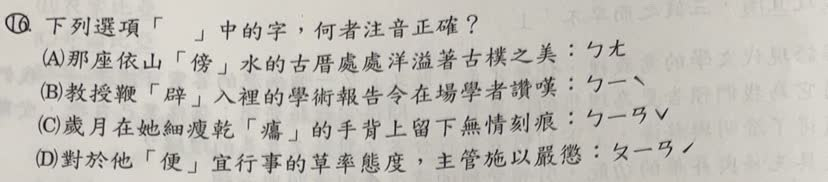

分享原卷｜第16題
完整原題
下列選項「 」中的字，何者注音正確？
(A) 那座依山「傍」水的古厝處處洋溢著古樸之美：ㄅㄤ
(B) 教授鞭「辟」入裡的學術報告令在場學者讚嘆：ㄅㄧˋ
(C) 歲月在她細瘦乾「癟」的手背上留下無情刻痕：ㄅㄧㄢˇ
(D) 對於他「便」宜行事的草率態度，主管施以嚴懲：ㄆㄧㄢˊ
先想一想，再查看答案、解說與原圖
原卷作答：D；紅筆訂正B
正確答案：B。鞭辟入裡的「辟」讀ㄅㄧˋ。
逐項解析
| 選項與原句 | 判讀 | 句意與判斷理由 |
|---|---|---|
| (A) 那座依山「傍」水的古厝處處洋溢著古樸之美：ㄅㄤ | 不選 | 依山傍水的傍應讀ㄅㄤˋ，不是題印的ㄅㄤ。 |
| (B) 教授鞭「辟」入裡的學術報告令在場學者讚嘆：ㄅㄧˋ | 應選 | 鞭辟入裡的辟讀ㄅㄧˋ，本項正確。 |
| (C) 歲月在她細瘦乾「癟」的手背上留下無情刻痕：ㄅㄧㄢˇ | 不選 | 使用者確認原印ㄅㄧㄢˇ；乾癟的癟正音是ㄅㄧㄝˇ，故不選。 |
| (D) 對於他「便」宜行事的草率態度，主管施以嚴懲：ㄆㄧㄢˊ | 不選 | 便宜行事的便讀ㄅㄧㄢˋ；ㄆㄧㄢˊ是價格便宜的讀法，不合此處。 |
詳細說明與解題步驟
【逐項核對詞語中的讀音】
A：依山傍水的「傍」讀ㄅㄤˋ，意思是靠近、依傍。原題注音是ㄅㄤ，少了第四聲，不能選。
B：鞭辟入裡的「辟」讀ㄅㄧˋ，形容見解深入透澈，題目標音正確，所以選B。
C：使用者已確認，原卷C印的是ㄅㄧㄢˇ；乾癟的「癟」正確讀音為ㄅㄧㄝˇ，韻母不同，因此C不正確。原題保留印刷的ㄅㄧㄢˇ，不能把它改成正音後再判成正確。
D：便宜行事的「便」讀ㄅㄧㄢˋ，表示依情況採取適宜的處理方式；價格便宜的「便」才讀ㄆㄧㄢˊ。原題把兩種讀法混用，不能選。
【容易混淆的地方】
乾癟：ㄍㄢ ㄅㄧㄝˇ。
便宜行事：ㄅㄧㄢˋ ㄧˊ ㄒㄧㄥˊ ㄕˋ。
價格便宜：ㄆㄧㄢˊ ㄧˊ。
這題要依詞語意思判讀音，不是看到同一個字就一律讀同一音。
核對註記：原題與四項完整注音已核對；C印刷ㄅㄧㄢˇ由使用者確認，答案B，原疑點結案。
原圖（僅本題）
